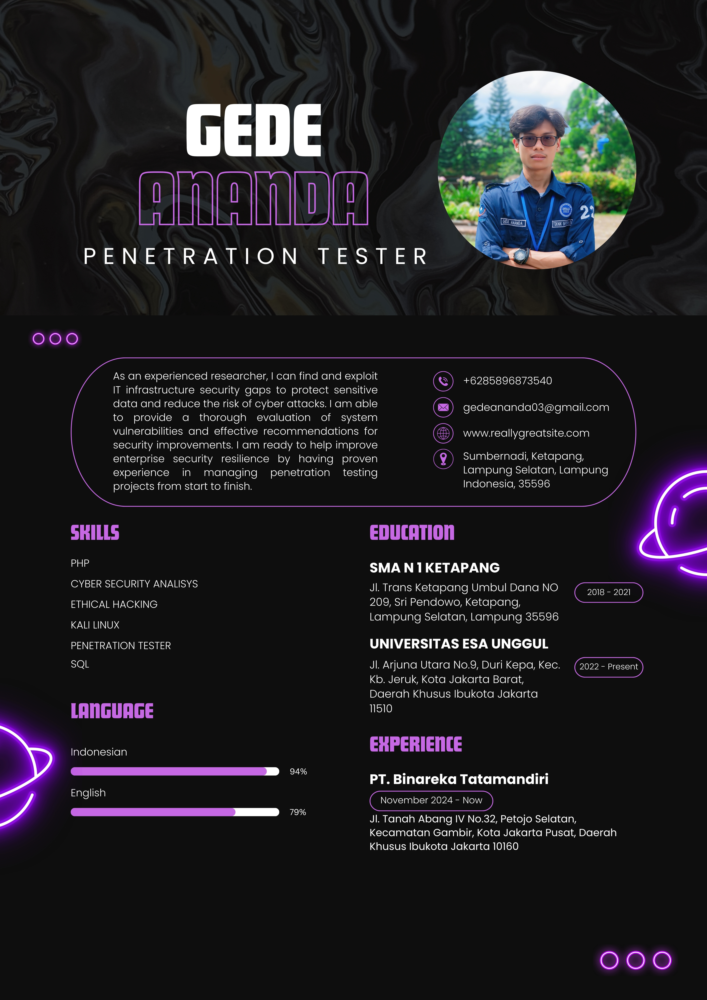
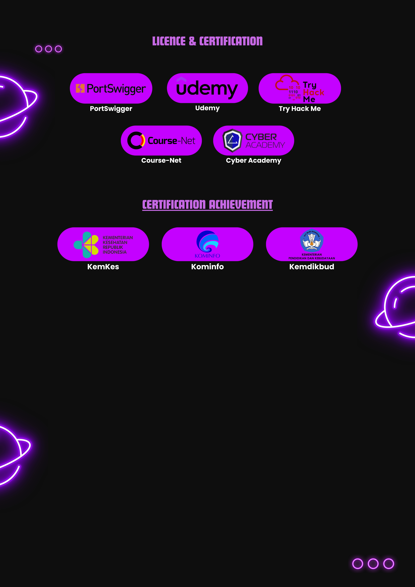

Hi, It's NantzzSec
I'am a
Perkenalkan, saya Gede Ananda, seorang profesional di bidang keamanansiber berusia tahun, dengan spesialisasi sebagai bug hunter, cybersecurity analyst, penetration tester, software engineer, dan red teammember. Saya memiliki pengalaman mendalam dalam mengidentifikasi, menganalisis, dan meningkatkan keamanan sistem, didukung oleh sertifikasi dari Kementerian Komunikasi dan Informatika serta Kementerian Kesehatan. Dengan kemampuan lintas peran ini, saya berkomitmen untuk memberikan solusi keamanan yang inovatif dan efektif
×

